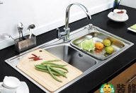
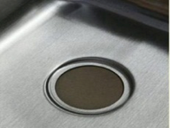

台面种类
人造石、大理石、不锈钢、搪瓷等，综合考虑采用人造石，
原因如下：
大理石：
易划伤，质地硬，容易碎碗碟，不耐酸碱。
不锈钢：
易有划痕，反光面难看，耐酸碱，经久耐用。
搪瓷：容易损坏
人造石：
耐磨，拼接痕迹不明显，耐酸碱，经久耐用。
人造石种类：
石英石及普通人造石
石英石用水笔画不会渗透，普通人造石的会渗透。钥匙划基本无痕，耐酸碱柠檬。
石英石台面还要注意哪些？
1，台面厚度差的12mm，一般15mm.
2，台面边做挡水，免得水流的到处都是。
3，台面下一般铺整木板作为垫层，更结实。
4，拼缝时切忌大范围打磨，拼缝是最考验厂家实力的地方之一，厂家有实力则工厂加工精度高，现场拼接只需要调平整对齐稍微用3000号以上的抛光片轻抛就好，基本可以做到1米外看不出痕迹。而一旦工厂加工不到位，现场拼接就需要大范围打磨，越打磨拼接处就越明显，影响效果。
台上盆还是台下盘？
台上盆
优点：安装简单
缺点：盆边高出台面，污渍难以清理，接缝处易结污渍
台中盆
优点：台面与盆边平，理论上台面好打理
缺点：实际上台盆与台面结合处需打胶，即便用防霉胶时间久了也会有一条黑线，而且还在面上；而如果台面开孔精度不够，台盆边沿缝不均匀不美观
台下盆（推荐）
优点：台盆边贴在台面底，容易打理
缺点：安装麻烦；千万不要听信商家台下盆容易掉，那只是怕麻烦的借口
，只要按标准安装没有问题。但台下盘会略微影响下部空间，应留意净水及小厨宝的空间需求。
单槽还是双槽？

双槽
适用厨房面积大，较大水槽能放置锅具，如果两槽都小，不如大单槽
单槽
适用厨房面积小，水槽保证能放置锅具。
水槽材质如何选择？
石英石、不锈钢、搪瓷、大理石等。
石英石（人造石的一种）
优点：看惯了不锈钢，这种材料就显得比较高档、温润、耐看，水声小。
缺点：价格高、容易有颜色残留，进口品牌要好一些。
304不锈钢
优点：经久耐用、耐酸耐碱，价格实惠。
缺点：比较大众，缺乏个性，水声偏大。
其他材质水槽各位业主就不要考虑了，缺点明显，不再详述
304不锈钢类别？
喷砂（哑光珍珠银面）
最普遍的形式
主流一次冲压（冷拉）成型的，没有焊缝，且深度如果超过200mm说明厚度也足够放心；焊接的要差一点

拉丝
表面处理工艺（镜面易花，不推荐），拉丝不易刮花。

压花压纹
价格高（弗兰卡）
304不锈钢鉴别？

一定是SUS304，一个字都不错，购买时查找下，并言明会用不锈钢识别药水测
水槽选购其他要点？
水槽及龙头价格？
价格相对透明，主要根据自己的经济情况进行选择，但同一品牌型号注意不同商家的
水槽及龙头品牌？
摩恩、欧琳、科勒、弗兰卡、白鸟
常见问题